|
Xiongkuo Min (闵雄阔)
|
|
Xiongkuo Min
Professor
Institute of Image Communication and Network Engineering
School of Information Science and Electronic Engineering
Shanghai Jiao Tong University, Shanghai, China
minxiongkuo@sjtu.edu.cn
Google Scholar
ResearchGate
DBLP
中文主页
|
About me
I'm currently a full Professor with the Institute of Image Communication and Network Engineering, School of Information Science and Electronic Engineering, Shanghai Jiao Tong University, Shanghai, China.
I received my B.E. degree from Wuhan University, Wuhan, China, in 2013, and my Ph.D. degree from Shanghai Jiao Tong University, Shanghai, China, in 2018. From Jan. 2016 to Jan. 2017, I was a visiting Ph.D. student at University of Waterloo. From Jun. 2018 to Sept. 2021, I did my PostDoc at Shanghai Jiao Tong University. From Jan. 2019 to Jan. 2021, I was a visiting scholar at The University of Texas at Austin and the University of Macau. Since Oct. 2021, I have been with Shanghai Jiao Tong University, serving as an Associate Professor until Jun. 2026 and as a Professor from Jul. 2026 to the present.
My research interests lie in the fields of multimedia, image/video processing, large multimodal model, and artificial intelligence, and particularly in:
Multimedia Signal Processing
- Image/video/audio quality assessment
- Image/video aesthetic assessment
- Image/video enhancement & restoration / low-level vision
- Visual attention analysis & prediction
- VR/AR/XR/metaverse and digital human
Large Multimodal Model
- LMM evaluation: generation & understanding benchmark, dynamic benchmark, agent evaluation
- LMM optimization: pre-training, post-training (finetuning & alignment), test-time learning, data construction
- Image/video generation & editing / AIGC
- Emotional intelligence / sentiment analysis / affective computing
Intelligent Healthcare
- Medical image processing & analysis
- AI for mental health
- AI for healthcare/medicine
Our research has been generously supported by academic/industry sponsors (such as NSFC, MOST, STCSM, SJTU, Tencent, Ant Group, Honor, and Intsig).
Looking for self-motivated students (Ph.D., master, and undergraduate students) working with me. For prospective students, please send me an email with your CV and transcript.
News
09/2026, We have 22 papers accepted at top conferences so far this year (including 8 at CVPR, 5 at AAAI, 3 at ICLR, 2 at ICML, 2 at ACM MM, and 2 at ECCV)
09/2026, I will serve as an Area Chair for ICLR 2027, AAAI 2027
09/2026, I have served as an Area Chair for NeurIPS 2026, ICLR 2026, ACM MM 2026, and as a Senior Program Committee member for AAAI 2026
07/2026, I have been promoted to Professor
07/2026, We receive the First Prize of the Shanghai Science and Technology Progress Award (上海市科技进步一等奖)
04/2026, We receive the Winner Award in CVPR LoViF 2026 Holistic Quality Assessment for 4D World Model Challenge
05/2025, I'm appointed as an Associate Editor for ACM Transactions on Multimedia Computing, Communications, and Applications (TOMM)
12/2025, We have 26 papers accepted at top conferences this year (including 6 at CVPR, 4 at ICCV, 12 at ACM MM, 1 at ACL, 1 at ICML, 1 at ICLR, 1 at AAAI)
12/2025, I have served as an Area Chair for ACM MM 2025
10/2025, We receive the Winner Award in ICCV VQualA 2025 Engagement Prediction for Short Videos Challenge, the Winner Award in ICCV VQualA 2025 Face Image Quality Assessment Challenge, and the Winner Award in ICCV VQualA 2025 Visual Quality Comparison for Large Multimodal Models Challenge
08/2025, I'm sponsored by NSFC (young scientists fund category B) (国家自然科学基金青年B类项目)
06/2025, We receive the Best Paper Award of IEEE Transactions on Broadcasting
02/2025, I receive the Wu Wenjun Artificial Intelligence Youth Science and Technology Award (吴文俊人工智能青年科技奖)
10/2024, Our paper accepted to ACM Multimedia 2024 is selected as Best Paper Nomination
09/2024, I'm appointed as an Associate Editor for Elsevier Signal Processing: Image Communication (SPIC)
09/2024, We receive the 1st Place Award of the ECCV AIM 2024 Challenge on UHD Blind Photo Quality Assessment
06/2024, We receive the Winner Award of the IEEE/CVF CVPR NTIRE 2024 Challenge on Short-form UGC Video Quality Assessment
05/2024, We receive the IEEE CASS VSPC-TC Best Paper Award
03/2024, We receive the First Prize of the Technological Invention Award of CIE (中国电子学会技术发明一等奖)
10/2023, We receive the Winner Prize of the IEEE ICIP Point Cloud Visual Quality Assessment Grand Challenge
07/2023, We receive the IEEE CASS MSA-TC Best Paper Award - Honorable Mention
06/2023, Undergraduate from our group wins the Best Bachelor Thesis Award of SJTU (Top 1%)
03/2023, Our survey paper wins the Hot Paper Award of SCIENCE CHINA Information Sciences
11/2022, We receive the First Prize of the Technological Invention Award of CSIG (中国图象图形学学会技术发明一等奖)
11/2022, We receive the Second Prize of the Teaching Achievement Award of CSIG
10/2022, We receive the First Prize of the IEEE ICIP Grand Challenge on Video Surveillance Quality Assessment
09/2022, I'm sponsored by NSFC (general program) (国家自然科学基金面上项目)
09/2022, I'm sponsored by Shanghai Pujiang Talent Program
06/2022, We receive the Best Paper Award of IEEE BMSB
10/2021, I have joined Shanghai Jiao Tong University as a tenure-track Associate Professor
Ongoing Research
More works on Research and Publication pages.
|
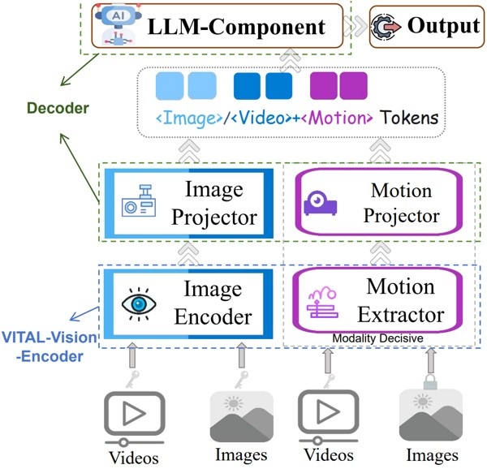 |
LMMs for Image/Video Quality Assessment
- [CVPR 2026] VITAL: Vision-Encoder-centered Pre-training for LMMs in Visual Quality Assessment
Z. Jia, L. Cao, J. Han, Z. Zhang, J. Qian, J. Wang, Z. Chen, G. Zhai, and X. Min, IEEE/CVF CVPR, 2026. [Code]
- [CVPR 2026] Generalizable Video Quality Assessment via Weak-to-Strong Learning
L. Cao, W. Sun, X. Zhu, K. Zhang, J. Jia, Y. Peng, D. Zhu, G. Zhai, and X. Min, IEEE/CVF CVPR, 2026. [Code]
- [AAAI 2026] Scaling-up Perceptual Video Quality Assessment
Z. Jia, Z. Zhang, X. Zhu, C. Li, J. Han, X. Liu, G. Zhai, and X. Min, AAAI, 2026. [Database & Code] Oral
- [AAAI 2026] Refine-IQA: Multi-Stage Reinforcement Finetuning for Perceptual Image Quality Assessment
Z. Jia, J. Qian, Z. Zhang, Z. Chen, and X. Min, AAAI, 2026. [Code]
- [AAAI 2026] VQAThinker: Exploring Generalizable and Explainable Video Quality Assessment via Reinforcement Learning
L. Cao, W. Sun, W. Zhang, X. Zhu, J. Jia, K. Zhang, D. Zhu, G. Zhai, and X. Min, AAAI, 2026. [Code]
- [MM 2025] VQA^2: Visual Question Answering for Video Quality Assessment
Z. Jia, Z. Zhang, J. Qian, H. Wu, W. Sun, C. Li, X. Liu, W. Lin, G. Zhai, and X. Min, ACM MM, 2025. [Database & Code]
- [ICLR 2026] Grounding-IQA: Grounding Multimodal Language Model for Image Quality Assessment
Z. Chen, X. Zhang, W. Li, R. Pei, F. Song, X. Min, X. Liu, X. Yuan, Y. Guo, and Y. Zhang, ICLR, 2026. [Database & Code]
- [ICML 2024] Q-Align: Teaching LMMs for Visual Scoring via Discrete Text-Defined Levels
H. Wu, Z. Zhang, W. Zhang, C. Chen, L. Liao, C. Li, Y. Gao, A. Wang, E. Zhang, W. Sun, Q. Yan, X. Min, G. Zhai, and W. Lin, ICML, 2024. [Code]
|
|
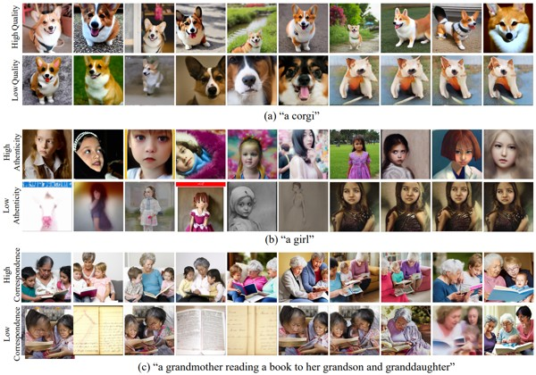 |
Evaluation for Image/Video/Audio Generation
- [ICML 2026] LOVE: Benchmarking and Evaluating Text-to-Video Generation and Video-to-Text Interpretation
J. Wang, H. Duan, Z. Jia, Z. Zhang, Y. Zhao, J. Wang, G. Zhai, and X. Min, ICML, 2026. [Database & Code]
- [ICML 2025] AGAV-Rater: Adapting Large Multimodal Model for AI-Generated Audio-Visual Quality Assessment
Y. Cao, X. Min, Y. Gao, W. Sun, and G. Zhai, ICML, 2025. [Database & Code]
- [CVPR 2025] AIGV-Assessor: Benchmarking and Evaluating the Perceptual Quality of Text-to-Video Generation with LMM
J. Wang, H. Duan, G. Zhai, J. Wang, and X. Min, IEEE/CVF CVPR, 2025. [Database & Code]
- [ICCV 2025] LMM4LMM: Benchmarking and Evaluating Large-Multimodal Image Generation With LMMs
J. Wang, H. Duan, Y. Zhao, J. Wang, G. Zhai, and X. Min, IEEE/CVF ICCV, 2025. [Database & Code]
- [TMM 2026] Quality Assessment for AI Generated Images with Instruction Tuning
J. Wang, H. Duan, G. Zhai, and X. Min, IEEE TMM, 2026. [Database & Code]
- [TCSVT 2023] AGIQA-3K: An Open Database for AI-Generated Image Quality Assessment
C. Li, Z. Zhang, H. Wu, W. Sun, X. Min, X. Liu, G. Zhai, and W. Lin, IEEE TCSVT, 2023. [Database] ESI Highly Cited Paper
|
|
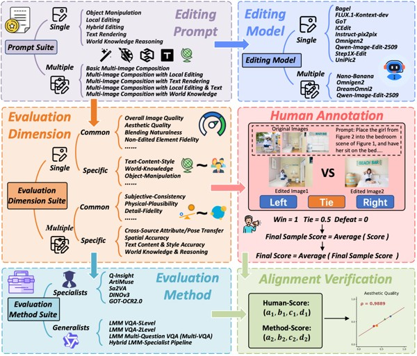 |
Evaluation for Image/Video Editing
- [CVPR 2026] I2I-Bench: A Comprehensive Benchmark Suite for Image-to-Image Editing Models
J. Wang, J. Wang, H. Duan, J. Kang, G. Zhai, and X. Min, IEEE/CVF CVPR, 2026. [Database & Code]
- [MM 2025] Towards Explainable Partial-AIGC Image Quality Assessment
J. Qian, Z. Jia, Z. Zhang, Z. Zhang, G. Zhai, and X. Min, ACM MM, 2025. [Database & Code]
- [ECCV 2026] EditHF-1M: A Million-Scale Rich Human Preference Feedback for Image Editing
Z. Xu, H. Duan, Z. Ji, X. Zhang, Y. Liu, X. Min, K. Gu, J. Zhang, S. Xu, J. Chen, B. Li, and G. Zhai, ECCV, 2026. [Database & Code] Spotlight
- [MM 2025] LMM4Edit: Benchmarking and Evaluating Multimodal Image Editing with LMMs
Z. Xu, H. Duan, B. Liu, G. Ma, J. Wang, L. Yang, S. Gao, X. Wang, J. Wang, X. Min, G. Zhai, and W. Lin, ACM MM, 2025. [Database & Code]
|
|
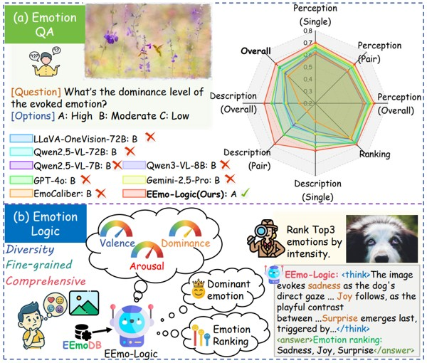 |
LMMs for Emotion Analysis
- [ICML 2026] EEmo-Logic: A Unified Dataset and Multi-Stage Framework for Comprehensive Image-Evoked Emotion Assessment
L. Gao, Z. Jia, Z. Xing, W. Sun, H. Duan, G. Zhai, and X. Min, ICML, 2026. [Database & Code] Spotlight
- [MM 2025] EEmo-Bench: A Benchmark for Multi-modal Large Language Models on Image Evoked Emotion Assessment
L. Gao, Z. Jia, Y. Zeng, W. Sun, Y. Zhang, W. Zhou, G. Zhai, and X. Min, ACM MM, 2025. [Database]
- [Preprint] E^3mo-Bench: A Scalable Benchmark for Multimodal Evoked and Expressed Emotion Understanding via Bayesian Pairwise Alignment
L. Gao, Z. Jia, S. Li, Z. Xing, J. Wang, H. Duan, and X. Min, Preprint, 2026.
- [JSTSP 2026] MEMO-Bench: A Multiple Benchmark for Text-to-Image and Multimodal Large Language Models on Human Emotion Analysis
Y. Zhou, Z. Zhang, J. Cao, Y. Jiang, J. Jia, F. Wen, X. Liu, X. Min, X.-P. Zhang, and G. Zhai, IEEE JSTSP, 2026. [Database]
|
|
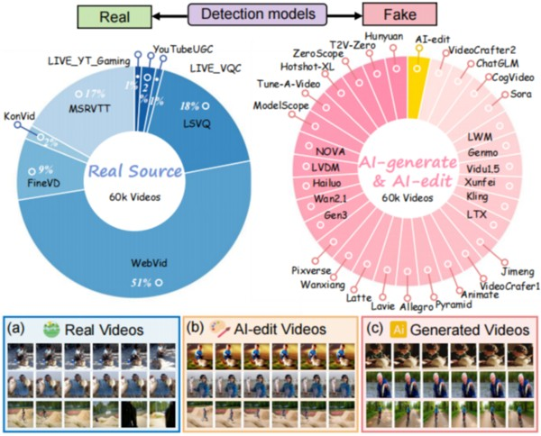 |
Image/Video Forensic and Security
- [CVPR 2026] FVBench: Benchmarking Deepfake Video Detection Capability of Large Multimodal Models
J. Wang, H. Duan, J. Wang, and X. Min, IEEE/CVF CVPR, 2026. [Database & Code]
- [MM 2025] DFBench: Benchmarking Deepfake Image Detection Capability of Large Multimodal Models
J. Wang, H. Duan, J. Wang, Z. Jia, W. Y. Yang, X. Zhu, Y. Zhao, J. Qian, Y. Xing, G. Zhai, and X. Min, ACM MM, 2025. [Database & Code]
- [Preprint] ManipShield: A Unified Framework for Image Manipulation Detection, Localization and Explanation
Z. Xu, H. Duan, X. Wang, Z. Cai, K. Zhang, X. Min, and G. Zhai, Preprint, 2026.
- [CVPR 2026] Adapter Shield: A Unified Framework with Built-in Authentication for Preventing Unauthorized Zero-Shot Image-to-Image Generation
J. Jia, H. Miao, Y. Zhou, W. Zhou, J. Zhang, L. Cao, D. Zhu, H. Yang, X. Min, W. Sun, and G. Zhai, IEEE/CVF CVPR, 2026.
- [CVPR 2026] Evaluating Dataset Watermarking for Fine-tuning Traceability of Customized Diffusion Models: A Comprehensive Benchmark and Removal Approach
X. Wang, H. Sun, W. Sun, K. Xue, W. Zhou, J. Zhang, W. Sun, D. Zhu, X. Min, J. Jia, and Z. Fang, IEEE/CVF CVPR findings, 2026.
|
|
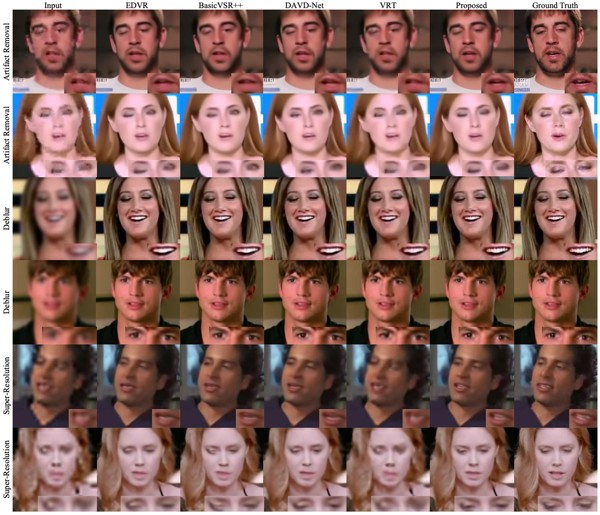 |
Image/Video Enhancement/Restoration/Compression/Generation
- [AAAI 2026] Audio-Assisted Face Video Restoration with Temporal and Identity Complementary Learning
Y. Cao, Y. Gao, W. Sun, X. Liu, Y. Zhang, and X. Min, AAAI, 2026.
- [ECCV 2026] From Open Loop to Closed Loop: A Test-Time Iterative Optimization Framework for Reference-Consistent Image Generation
B. Zhao, X. Zhang, H. Zheng, S. Liu, X. Min, G. Zhai, and X. Liu, ECCV, 2026. [Code]
- [MM 2025] Omni^2: Unifying Omnidirectional Image Generation and Editing in an Omni Model
L. Yang, H. Duan, Y. Zhu, X. Liu, L. Liu, Z. Xu, G. Ma, X. Min, G. Zhai, and P. L. Callet, ACM MM, 2025. [Code]
- [MM 2025] Towards a New Paradigm of Visual Signal Compression
C. Li, X. Wu, H. Wu, D. Feng, Z. Zhang, G. Lu, X. Min, X. Liu, G. Zhai, and W. Lin, ACM MM, 2025. [Code]
- [TCSVT 2025] Joint Luminance-Chrominance Learning for Image Debanding
Z. Chen, W. Sun, J. Jia, R. Huang, F. Lu, Y. Chen, X. Min, G. Zhai, and W. Zhang, IEEE TCSVT, 2025.
- [TMM 2024] Quality-Guided Skin Tone Enhancement for Portrait Photography
S. Gao, H. Duan, X. Li, K. Fu, Y. Peng, Q. Xu, Y. Chang, J. Wang, X. Min, and G. Zhai, IEEE TMM, 2024.
- [ECCV 2024] GLARE: Low Light Image Enhancement via Generative Latent Feature Based Codebook Retrieval
H. Zhou, W. Dong, X. Liu, S. Liu, X. Min, G. Zhai, and J. Chen, ECCV, 2024.
- [TMM 2024] Pixel-Learnable 3DLUT With Saturation-Aware Compensation for Image Enhancement
J. Liu, Q. Li, X. Min, Y. Su, G. Zhai, and X. Yang, IEEE TMM, 2024.
- [ECCV 2024] UniProcessor: A Text-Induced Unified Low-Level Image Processor
H. Duan, X. Min, S. Wu, W. Shen, and G. Zhai, ECCV, 2024. [Code]
|
|
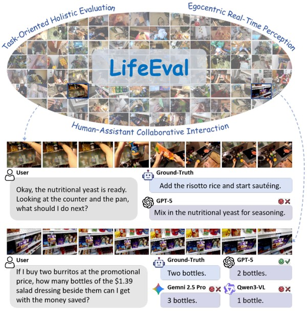 |
Evaluation & Optimization for LMMs (Higher-Level)
- [ACL 2026] Market-Bench: Benchmarking Large Language Models on Economic and Trade Competition
Y. Zheng, H. Duan, Z. Zhang, Y. Zhu, X. Min, and G. Zhai, ACL, 2026.
- [CVPR 2026] LifeEval: A Multimodal Benchmark for Assistive AI in Egocentric Daily Life Tasks
H. Gao, K. Zhang, S. Wang, M. Chen, Q. Cao, X. Wang, Y. Zhu, X. Min, W. Sun, D. Zhu, and G. Zhai, IEEE/CVF CVPR, 2026.
- [CVPR 2026] Learning to Wander: Improving the Global Image Geolocation Ability of LMMs via Actionable Reasoning
Y. Zheng, H. Duan, Z. Zhang, X. Liu, and X. Min, IEEE/CVF CVPR findings, 2026.
- [ICLR 2026] MIMIC-Bench: Exploring the User-Like Thinking and Mimicking Capabilities of Multimodal Large Language Models
J. Teng, H. Duan, S. Wu, J. Wang, X. Zhu, J. Jin, W. Shen, X. Min, and G. Zhai, IEEE/CVF CVPR, 2026.
- [ICLR 2026] ODI-Bench: Can MLLMs Understand Immersive Omnidirectional Environments?
L. Yang, H. Duan, R. Tao, J. Cheng, S. Wu, Y. Li, J. Liu, X. Min, and G. Zhai, ICLR, 2026. [Database]
|
|
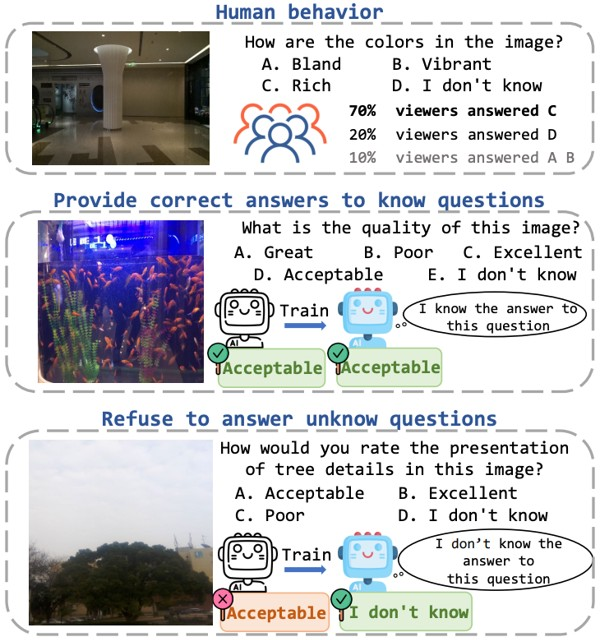 |
Evaluation & Optimization for LMMs (Low-Level)
- [MM 2026] AGTI-Bench: A Human-Aligned Benchmark for Text-Aware Text-to-Image Generation
Z. Ma, J. Wang, and X. Min, ACM MM, 2026.
- [TCSVT 2026] Mitigating Low-Level Visual Hallucinations Requires Self-Awareness: Database, Model, and Training Strategy
Y. Sun, X. Min, Z. Zhang, Y. Gao, Y. Cao, and G. Zhai, IEEE TCSVT, 2026.
- [MM 2025] GOBench: Benchmarking Geometric Optics Generation and Understanding of MLLMs
X. Zhu, Z. Jia, J. Wang, X. Zhao, H. Duan, X. Min, J. Wang, Z. Zhang, and G. Zhai, ACM MM, 2025. [Database]
- [ICLR 2025] A-Bench: Are LMMs Masters at Evaluating AI-generated Images?
Z. Zhang, H. Wu, C. Li, Y. Zhou, W. Sun, X. Min, Z. Chen, X. Liu, W. Lin, and G. Zhai, ICLR, 2025. [Database]
- [JSTSP 2025] R-Bench: Are your Large Multimodal Model Robust to Real-world Corruptions?
C. Li, J. Zhang, Z. Zhang, H. Wu, Y. Tian, W. Sun, G. Lu, X. Min, X. Liu, W. Lin, X.-P. Zhang, and G. Zhai, IEEE JSTSP, 2025. [Database]
- [CVPR 2025] Q-Bench-Video: Benchmark the Video Quality Understanding of LMMs
Z. Zhang, Z. Jia, H. Wu, C. Li, Z. Chen, Y. Zhou, W. Sun, X. Liu, X. Min, W. Lin, and G. Zhai, IEEE/CVF CVPR, 2025. [Database]
|
|
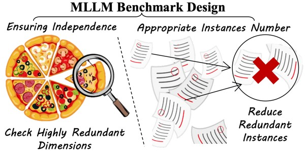 |
Evaluation for LMMs (Meta-Bench)
- [ICCV 2025] Information Density Principle for MLLM Benchmarks
C. Li, X. Li, Z. Zhang, Y. Tian, Z. Jia, X. Liu, X. Min, J. Wang, H. Duan, K. Chen, and G. Zhai, IEEE/CVF ICCV, 2025. [Database]
- [ACL 2025] Redundancy Principles for MLLMs Benchmarks
Z. Zhang, X. Zhao, X. Fang, C. Li, X. Liu, X. Min, H. Duan, K. Chen, and G. Zhai, ACL, 2025. [Database]
|
|
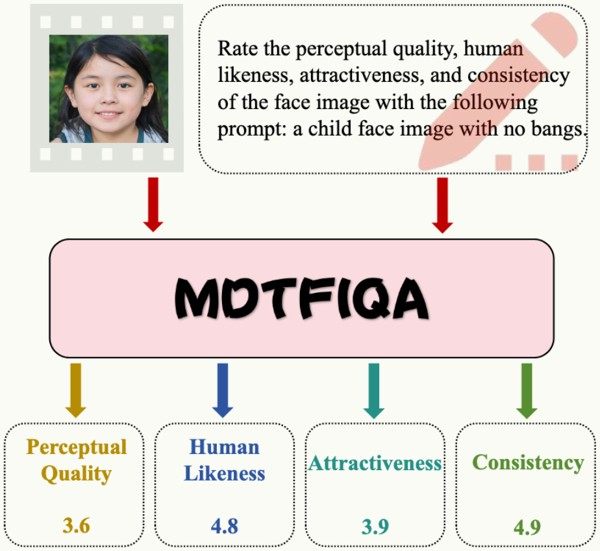 |
Evaluation for Human Image/Video Generation
- [TCSVT 2026] Multi-Dimensional Quality Assessment for AI-Generated Human-Centric Videos: Dataset and Model
S. Wu, Y. Li, H. Duan, Y. Zhu, X. Min, P. L. Callet, and G. Zhai, IEEE TCSVT, 2026.
- [TCSVT 2026] AGHI-QA: A Subjective-Aligned Dataset and Metric for AI-Generated Human Images
Y. Li, S. Wu, W. Sun, Z. Zhang, Y. Zhu, Z. Zhang, H. Duan, X. Min, and G. Zhai, IEEE TCSVT, 2026.
- [MM 2025] Multi-Dimensional Text-to-Face Image Quality Assessment Using LLM: Database and Method
Y. Gao, X. Min, J. Han, Y. Cao, S. Wu, Y. Dou, and G. Zhai, ACM MM, 2025.
- [MM 2025] LMME3DHF: Benchmarking and Evaluating Multimodal 3D Human Face Generation with LMMs
W. Y. Yang, J. Wang, S. Wu, H. Duan, Y. Zhu, L. Yang, K. Fu, G. Zhai, and X. Min, ACM MM, 2025. [Database & Code]
- [MM 2025] Human-Activity AGV Quality Assessment: A Benchmark Dataset and an Objective Evaluation Metric
Z. Zhang, W. Sun, X. Li, Y. Li, Q. Ge, J. Jia, Z. Zhang, Z. Ji, F. Sun, S. Jui, X. Min, and G. Zhai, ACM MM, 2025. [Database & Code]
- [NeurIPS 2024] GAIA: Rethinking Action Quality Assessment for AI-Generated Videos
Z. Chen, W. Sun, Y. Tian, J. Jia, Z. Zhang, J. Wang, R. Huang, X. Min, G. Zhai, W. Zhang, NeurIPS, 2024. [Database]
|
|
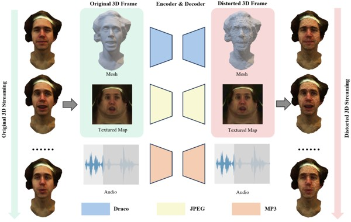 |
Digital Human Generation Quality Assessment
- [TMM 2026] Who is a Better Dresser: Your Personal Quality Assessment Agent for Virtual Try-On Digital Humans
Y. Zhou, Z. Zhang, F. Wen, Y. Jiang, J. Jia, X. Liu, X. Min, J. Cao, and G. Zhai, IEEE TMM, 2026. [Database]
- [ICCV 2025] Who Is a Better Talker: Subjective and Objective Quality Assessment for AI-Generated Talking Heads
Y. Zhou, J. Cao, Z. Zhang, F. Wen, Y. Jiang, J. Jia, X. Liu, X. Min, and G. Zhai, IEEE/CVF ICCV, 2025.
- [TCSVT 2025] Who Is a Better Imitator: Subjective and Objective Quality Assessment of Animated Humans
Y. Zhou, Z. Zhang, J. Jia, Y. Jiang, X. Liu, X. Min, and G. Zhai, IEEE TCSVT, 2025. [Database]
- [MM 2024] Subjective and Objective Quality-of-Experience Assessment for 3D Talking Heads
Y. Zhou, Z. Zhang, W. Sun, X. Liu, X. Min, and G. Zhai, ACM MM, 2024. [Database]
|
Sponsors
Contact
Office: #5-414 SEIEE Building, Shanghai Jiao Tong University
Mail: #5-414 SEIEE Building, 800 Dong Chuan Rd, Shanghai 200240, China
Web: https://minxiongkuo.github.io/
Email: minxiongkuo@sjtu.edu.cn OR minxiongkuo@gmail.com
|